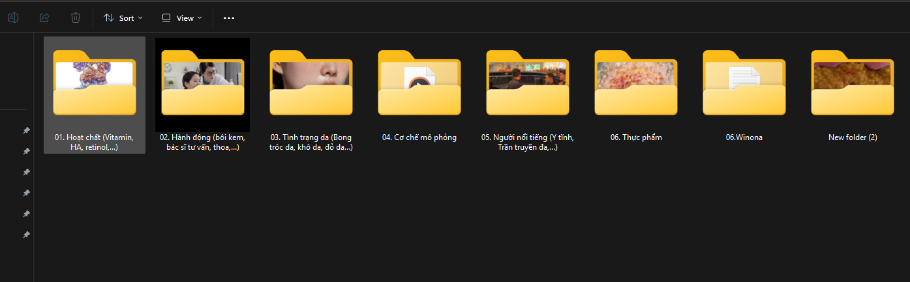
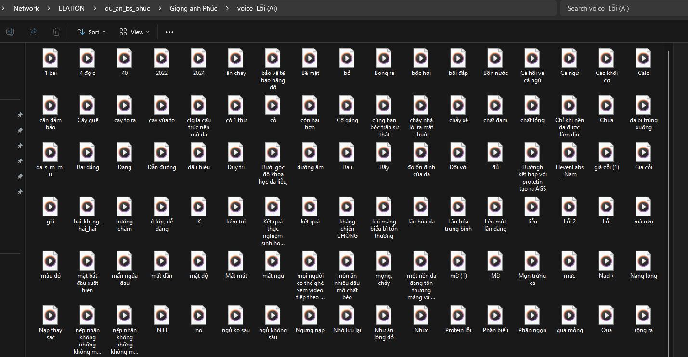
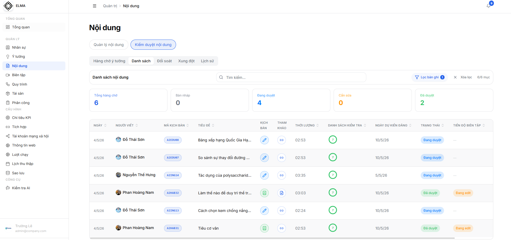

Chuẩn hóa hệ thống và dòng chảy công việc
Web quản lý nội bộ được bổ sung chức năng theo dõi tài liệu, thông tin, thay đổi công việc và luồng content đến edit.

Báo cáo tháng | 1 tháng 4 - 30 tháng 4
Tóm tắt các cải tiến vận hành, điều chỉnh quy trình, bài học và thành tựu kênh trong tháng 4.
01
Trong tháng, phần cải tiến được nhìn theo 4 trục: vận hành, edit, content và khả năng hòa nhập của nhân sự mới.
Web quản lý nội bộ được bổ sung chức năng theo dõi tài liệu, thông tin, thay đổi công việc và luồng content đến edit.
Nhóm edit tối ưu source trám, text, hiệu ứng, sound, animation, AI ảnh trám và tư duy hook để video sạch hơn.
Content cải thiện cách biến old media thành new media, bám giá trị người xem và nhận thức rõ hơn về vận hành thương hiệu.
Nhân sự thử việc hiểu rõ hơn đầu mục công việc, tư duy edit/content và cách tạo sản phẩm phù hợp với đội ngũ.
01.1
Trọng tâm của Trường trong tháng là nâng tư duy Ads, tìm hiểu quản trị và đưa vận hành team vào một hệ thống rõ hơn.
Học thêm tư duy chạy Ads, phương thức quản trị và chuyển phần vận hành nội bộ sang mô hình có dữ liệu, tài liệu, theo dõi công việc.
Học cách chạy Ads, tư duy đúng về Ads và đang tìm hiểu sâu hơn phương thức quản trị.
Bổ sung chức năng để team dùng chung: tài liệu, thông tin mọi người làm và theo dõi thay đổi công việc.
Quy trình từ content sang edit đã thành một dòng chảy sơ khai; tháng 5 sẽ tiếp tục hoàn chỉnh.
01.2
Nhóm đầu tập trung vào kho tư liệu, xử lý cảnh trám, hiệu ứng, text và khả năng hỗ trợ tiến độ chung.
01.3
Phần tiếp theo ghi nhận khả năng thích nghi, ứng dụng công cụ mới, tối ưu hook và cải thiện kết quả video.
01.4
Nhóm content thử việc tập trung hiểu thị trường, insight, new media, quy trình làm việc và hướng tối ưu cá nhân.
01.5
Phúc và Long tập trung vào kỹ năng chuyên môn, tốc độ hoàn thiện, tư duy edit và khả năng đồng bộ sản phẩm với đội ngũ.
02
Tháng này team bổ sung 3 điểm chính: kho source trám dùng chung, kho voice AI lỗi và đưa ELMA vào quản lý luồng nghiên cứu, content, edit.
Thay vì mỗi người tìm rồi lưu riêng lẻ, team có kho chung để cải thiện tốc độ tìm source và tạo tài liệu cho người sau dùng lại.
Các lỗi phát sinh khi làm voice AI được gom lại thành nguồn đối chiếu chung, giúp mọi người tránh mất công dò lại từ đầu.
Từ nghiên cứu, viết content, duyệt quản lý đến edit nhận việc đều đi theo một trình tự tập trung, chính xác và dễ kiểm soát hơn.
02.1
Source trám được tập trung, phân chia theo chủ đề và đặt tên để team tìm nhanh hơn, đồng thời tạo tài liệu dùng lại cho người sau.

02.2
Các lỗi voice AI được tập trung thành một kho đối chiếu chung, giúp team giảm thời gian xử lý và hạn chế lặp lại lỗi cũ.

02.3
ELMA được dùng để tập trung tài liệu và kiểm soát luồng việc chính xác hơn, thay cho việc phải làm việc rải rác qua nhiều ứng dụng.

03
Sai lầm chính nằm ở cách giao việc: quản lý giao quá nhanh trước khi mọi người hiểu rõ vấn đề, lý do cần làm và mức độ quan trọng của đầu việc.
Thay vì nói cho mọi người hiểu vấn đề rồi mới giao, việc được triển khai vội khiến người nhận thiếu bối cảnh và chưa thấy rõ vai trò của mình trong kết quả chung.
Người quản lý đi thẳng vào yêu cầu công việc, chưa giải thích trước vấn đề đang cần giải quyết và vì sao nó quan trọng.
Team có thể cảm thấy đang phải làm việc không đúng chuyên môn, vì chưa được trao đổi rõ vai trò, ý nghĩa và kết quả cần đạt.
Cần giúp mọi người hiểu vấn đề, mức độ quan trọng và lý do phải làm; sau đó mới chốt người phụ trách và cách triển khai.
04
Hướng sửa là chuyển từ giao việc theo tốc độ sang giao việc có trao đổi: người nhận việc cần hiểu mục tiêu, lý do và tiêu chuẩn trước khi bắt tay làm.
Mở đầu bằng vấn đề đang xảy ra, điểm nghẽn cần xử lý và bối cảnh khiến việc này xuất hiện.
Làm rõ việc này ảnh hưởng thế nào đến tiến độ, chất lượng sản phẩm và dòng chảy chung của team.
Cho người nhận việc phản hồi về chuyên môn, cách làm, khó khăn và nguồn lực cần hỗ trợ.
Sau khi đã đồng thuận, chốt người phụ trách, deadline, đầu ra mong muốn và cách báo cáo tiến độ.
05
Tháng 4 ghi nhận sản lượng nội dung lớn, kênh tăng mạnh ở lượt xem, tương tác, người theo dõi và hoạt động nhắn tin.
video đã làm trong tháng 4
↑ 65% so với 30 ngày trước
↑ 47,8% so với 30 ngày trước
↑ 146,3% so với 30 ngày trước
↑ 363,5% so với 30 ngày trước
lượt tăng ròng trong tháng
trên 236 người liên hệ nhắn tin
06
View tăng mạnh nhưng cần nhìn thêm tỷ lệ giữ chân để đánh giá chất lượng phân phối và mức độ xem sâu.
Tỷ lệ từ tổng view sang mốc 3 giây đạt 51,3%; từ tổng view sang mốc 1 phút đạt 13,3%. Trong nhóm đã xem tối thiểu 3 giây, khoảng 26,0% tiếp tục tới mốc 1 phút.
Người theo dõi chiếm 9,9%, cho thấy Reels đang làm tốt vai trò mở rộng tệp mới.
Tương tác từ người chưa theo dõi chiếm 75%, cao hơn nhóm follower 25%.
Người liên hệ lại là 6, trong đó 66,7% đến từ trả phí và 33,3% tự nhiên.
07
Bảng xếp hạng dựa trên dữ liệu Excel: 47 video Facebook có editor và 36 link TikTok có số liệu. TikTok được cộng theo lượt xem của từng link có trong file.
Khang dẫn đầu tổng view; Đạt có hiệu suất trung bình cao nhất trên mỗi video.
08
Top 10 được xếp theo lượt xem trong Excel. Cả 10 video cao nhất đều là Facebook Reels, cho thấy phân phối Facebook đang tạo phần lớn đỉnh view.
09
Traffic, view và tương tác đã tăng nhưng phần chuyển đổi, tuyến nội dung và hệ thống sản phẩm vẫn chưa theo đúng kế hoạch vận hành.
Doanh thu/chuyển đổi còn rất thấp so với mức traffic đang có. Kênh đang tạo chú ý tốt, nhưng đường dẫn từ xem nội dung đến hành động mua hoặc tư vấn vẫn chưa đủ rõ.
Nội dung còn cảm tính, chưa bám tỷ lệ mục tiêu A1 10%, A2 40%, A3 20%, A4 20%.
A4 chưa đúng nhịp; tuyến A3 theo kế hoạch vẫn chưa xuất hiện trên kênh trong tháng.
Web chưa thành điểm nhận traffic, nuôi niềm tin, tư vấn và điều hướng sản phẩm.
Ngoài Winona, danh mục sản phẩm/CTA chưa đủ đa dạng để hấp thụ nhiều nhu cầu.
10
Trọng tâm tháng 5 là siết lịch sản xuất, cố định tuyến nội dung, đưa web vào luồng chuyển đổi và mở rộng sản phẩm/CTA.
Mỗi video trong tháng 5 cần có vai trò trong phễu: kéo traffic, xây niềm tin, giải thích vấn đề hoặc dẫn về tư vấn/sản phẩm.